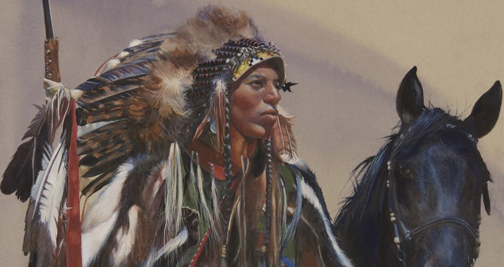
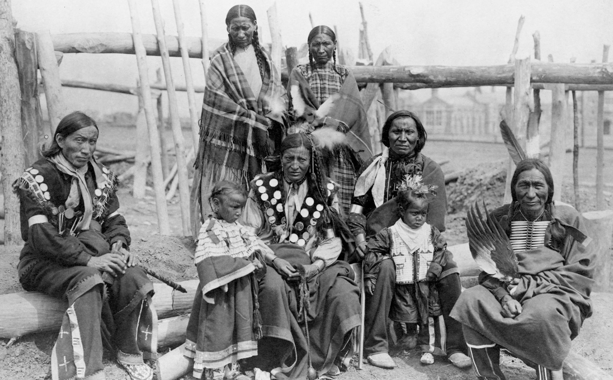

Lakota Tribe
Below is the audio recording of an instance when the Lakota Tribe performs their ritual of rain-dancing. They sing and dance enthusiastically and soon experience the rain pouring down on their lands.
Press play to hear how they connected with nature:
Time:


The Rain Calling Ritual
Among rituals of Lakota and other Native Americans are weather modification rituals such as rain dances, performed by both the men and women of the tribe.
The droughts could bring serious problems for the natives since having some rain was essential for their survival and their food crops. The rain dance would usually take place in the driest month of the year, so usually this ritual was performed in mid to late August every year.
These Native Americans wore special costumes when performing the rain dance ceremony, and these costumes were used just for this specific ceremony every year.
About The Tribe
The Lakota tribe or the people of Standing Rock are one of the first original Native American tribes who inhabited the North Americas before the arrival of Europeans.
Often referred to as the Great Sioux Nation, these people can be divided into three distinct groups based on language and geography. These groups are Dakota, Lakota, and Nakota. “Dakota” and “Lakota” means “friends” or “allies”.
By the end of the 16th century, these tribes were living in the upper Mississippi River region (present-day Wisconsin, Minnesota, Iowa, and the Dakotas).